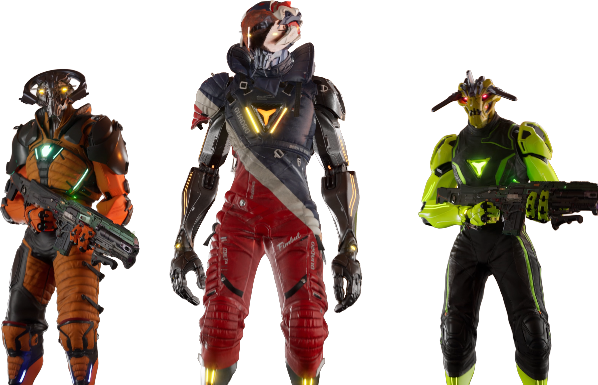

Play the game
Step into the cinematic layer.
Explore the universe, see the main gameplay surfaces, and understand how the product scales from player fantasy to faction conflict.
Enter the game overviewPlayable Sci-Fi Universe
Experience an award-winning cinematic space frontier where high-fidelity gameplay, fleet strategy, and a player-driven economy converge.
Experience the thrill of the frontier.
Immediate
Browser access and marketplace surfaces give first-time visitors a real product moment fast.
Intent-first navigation
Instead of making the homepage perform every job at once, the experience is broken into three premium paths with clear next steps.
Play the game
Explore the universe, see the main gameplay surfaces, and understand how the product scales from player fantasy to faction conflict.
Enter the game overviewExplore the universe
Follow the factions, contested frontier, and worldbuilding that give the sci-fi setting texture and consequence.
See the universeOwn the economy
Explore marketplace access, browser systems, and the economy layer that turns assets into long-term strategic stakes.
Explore the economyInteractive showcase
The core product surfaces are now explained through a single interactive module that clarifies what changes at each layer of the experience.
Third-person adventure
See the cinematic expression of Star Atlas through traversal, atmosphere, contested space, and high-stakes movement.
Universe design
The redesign preserves cinematic sci-fi ambition, but narrows the lore surface down to the details that help a first-time visitor understand why the universe feels distinct.

MUD
Human momentum, visible production power, and a recognizably grounded presence inside the broader sci-fi world.
ONI
A more adaptive, plural, and strategically fluid force that broadens the tone of the universe.
Ustur
The clean, calculating counterpoint that gives the world sharper contrast and a stronger sense of technological ambition.
Economy clarity
Old marketing often loses confidence by shouting stale numbers and vague status labels. This redesign explains the economy through stable concepts: ownership, production, rentals, and strategic consequence.
The strongest premium economy pages do not feel like dashboards pasted into a sci-fi site. They feel like part of the same world, with copy that tells the visitor what the system does and why it matters.
That is why the new economy path starts with a calmer, more legible story and points toward the marketplace only after the visitor understands the value of entering it.
Marketplace
Asset discovery
The first-touch surface for browsing the ecosystem and understanding the breadth of possibility.
Rentals
Flexible access
Participation feels more premium when it is not all-or-nothing from the first click.
SAGE Labs
Operational depth
Production, scanning, and movement make the economy feel real instead of abstract.
Persistent
Strategic stakes
Assets gain more meaning when they influence mobility, readiness, and faction leverage.
Updates and trust
Newsroom, roadmap, and support are treated as first-class templates so the brand feels maintained, current, and intentional across every major destination.
Newsroom
Release notes, economy signals, and universe dispatches now live inside a calmer editorial structure.
Open newsroomRoadmap
A now-next-later model replaces vague launch-state language and removes brittle urgency theater.
View roadmapSupport
Clear support routing and explicit external labels help visitors know where to go for help without guesswork.
Get support